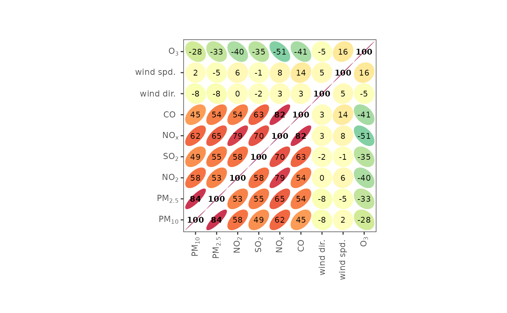

Function to to draw and visualise correlation matrices. The primary purpose is as a tool for exploratory data analysis. Hierarchical clustering is used to group similar variables.
Usage
corPlot(
mydata,
pollutants = NULL,
type = "default",
cluster = TRUE,
method = "pearson",
use = "pairwise.complete.obs",
annotate = c("cor", "signif", "stars", "none"),
dendrogram = FALSE,
triangle = c("both", "upper", "lower"),
diagonal = TRUE,
cols = "default",
r.thresh = 0.8,
text.col = c("black", "black"),
key.title = NULL,
key.position = "none",
strip.position = "top",
auto.text = TRUE,
plot = TRUE,
key = NULL,
...
)Arguments
- mydata
A data frame which should consist of some numeric columns.
- pollutants
the names of data-series in
mydatato be plotted bycorPlot. The default optionNULLand the alternative"all"use all available valid (numeric) data.- type
Character string(s) defining how data should be split/conditioned before plotting.
"default"produces a single panel using the entire dataset. Any other options will split the plot into different panels - a roughly square grid of panels if onetypeis given, or a 2D matrix of panels if twotypesare given.typeis always passed tocutData(), and can therefore be any of:A built-in type defined in
cutData()(e.g.,"season","year","weekday", etc.). For example,type = "season"will split the plot into four panels, one for each season.The name of a numeric column in
mydata, which will be split inton.levelsquantiles (defaulting to 4).The name of a character or factor column in
mydata, which will be used as-is. Commonly this could be a variable like"site"to ensure data from different monitoring sites are handled and presented separately. It could equally be any arbitrary column created by the user (e.g., whether a nearby possible pollutant source is active or not).
Most
openairplotting functions can take twotypearguments. If two are given, the first is used for the columns and the second for the rows.- cluster
Should the data be ordered according to cluster analysis. If
TRUEhierarchical clustering is applied to the correlation matrices usinghclust()to group similar variables together. With many variables clustering can greatly assist interpretation.- method
The correlation method to use. Can be
"pearson","spearman"or"kendall".- use
How to handle missing values in the
corfunction. The default is"pairwise.complete.obs". Care should be taken with the choice of how to handle missing data when considering pair-wise correlations.- annotate
What to annotate each correlation tile with. One of:
"cor", the correlation coefficient to 2 decimal places."signif", an X marker if the correlation is significant."stars", standard significance stars."none", no annotation.
- dendrogram
Should a dendrogram be plotted? When
TRUEa dendrogram is shown on the plot. Note that this will only work fortype = "default". Defaults toFALSE.- triangle
Which 'triangles' of the correlation plot should be shown? Can be
"both","lower"or"upper". Defaults to"both".- diagonal
Should the 'diagonal' of the correlation plot be shown? The diagonal of a correlation matrix is axiomatically always
1as it represents correlating a variable with itself. Defaults toTRUE.- cols
Colours to use for plotting. Can be a pre-set palette (e.g.,
"turbo","viridis","tol","Dark2", etc.) or a user-defined vector of R colours (e.g.,c("yellow", "green", "blue", "black")- seecolours()for a full list) or hex-codes (e.g.,c("#30123B", "#9CF649", "#7A0403")). Alternatively, can be a list of arguments to control the colour palette more closely (e.g.,palette,direction,alpha, etc.). SeeopenColours()andcolourOpts()for more details.- r.thresh
Values of greater than
r.threshwill be shown in bold type. This helps to highlight high correlations.- text.col
The colour of the text used to show the correlation values. The first value controls the colour of negative correlations and the second positive.
- key.title
Used to set the title of the legend. The legend title is passed to
quickText()ifauto.text = TRUE.- key.position
Location where the legend is to be placed. Allowed arguments include
"top","right","bottom","left"and"none", the last of which removes the legend entirely.- strip.position
Location where the facet 'strips' are located when using
type. When onetypeis provided, can be one of"left","right","bottom"or"top". When twotypes are provided, this argument defines whether the strips are "switched" and can take either"x","y", or"both". For example,"x"will switch the 'top' strip locations to the bottom of the plot.- auto.text
Either
TRUE(default) orFALSE. IfTRUEtitles and axis labels will automatically try and format pollutant names and units properly, e.g., by subscripting the "2" in "NO2". Passed toquickText().- plot
When
openairplots are created they are automatically printed to the active graphics device.plot = FALSEdeactivates this behaviour. This may be useful when the plot data is of more interest, or the plot is required to appear later (e.g., later in a Quarto document, or to be saved to a file).- key
Deprecated; please use
key.position. IfFALSE, setskey.positionto"none".- ...
Addition options are passed on to
cutData()fortypehandling. Some additional arguments are also available, varying somewhat in different plotting functions:title,subtitle,caption,tag,xlabandylabcontrol the plot title, subtitle, caption, tag, x-axis label and y-axis label. All of these are passed through toquickText()ifauto.text = TRUE.xlim,ylimandlimitscontrol the limits of the x-axis, y-axis and colorbar scales.ncolandnrowset the number of columns and rows in a faceted plot.fontsizeoverrides the overall font size of the plot by setting thetextargument ofggplot2::theme(). It may also be applied proportionately to anyopenairannotations (e.g., N/E/S/W labels on polar coordinate plots).Various graphical parameters are also supported:
linewidth,linetype,shape,size,border, andalpha. Not all parameters apply to all plots. These can take a single value, or a vector of multiple values - e.g.,shape = c(1, 2)- which will be recycled to the length of values needed.lineend,linejoinandlinemitretweak the appearance of line plots; seeggplot2::geom_line()for more information.In polar coordinate plots,
annotate = FALSEwill remove the N/E/S/W labels and any other annotations.
Value
an openair object
Details
The corPlot() function plots correlation matrices. The implementation
relies heavily on that shown in Sarkar (2007), with a few extensions.
Correlation matrices are a very effective way of understating relationships
between many variables. The corPlot() shows the correlation coded in three
ways: by shape (ellipses), colour and the numeric value. The ellipses can be
thought of as visual representations of scatter plot. With a perfect positive
correlation a line at 45 degrees positive slope is drawn. For zero
correlation the shape becomes a circle. See examples below.
With many different variables it can be difficult to see relationships
between variables, i.e., which variables tend to behave most like one
another. For this reason hierarchical clustering is applied to the
correlation matrices to group variables that are most similar to one another
(if cluster = TRUE).
If clustering is chosen it is also possible to add a dendrogram using the
option dendrogram = TRUE. Note that dendrogramscan only be plotted for
type = "default" i.e. when there is only a single panel. The dendrogram can
also be recovered from the plot object itself and plotted more clearly; see
examples below.
It is also possible to use the openair type option to condition the data in
many flexible ways, although this may become difficult to visualise with too
many panels.
Examples
# basic plot
corPlot(mydata)

if (FALSE) { # \dontrun{
# plot by season
corPlot(mydata, type = "season")
# recover dendrogram when cluster = TRUE and plot it
res <- corPlot(mydata, plot = FALSE)
plot(res$clust)
# a more interesting are hydrocarbon measurements
hc <- importAURN(site = "my1", year = 2005, hc = TRUE)
# now it is possible to see the hydrocarbons that behave most
# similarly to one another
corPlot(hc)
} # }